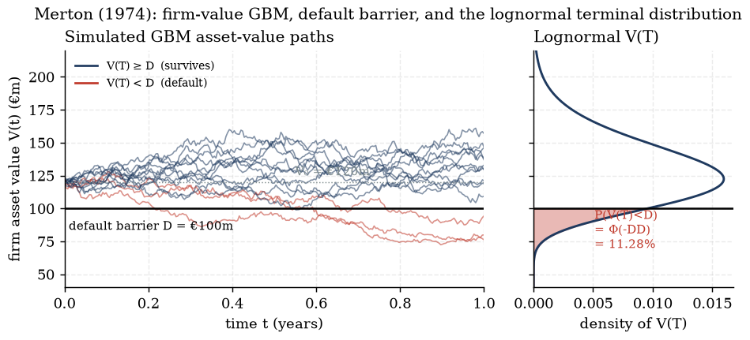
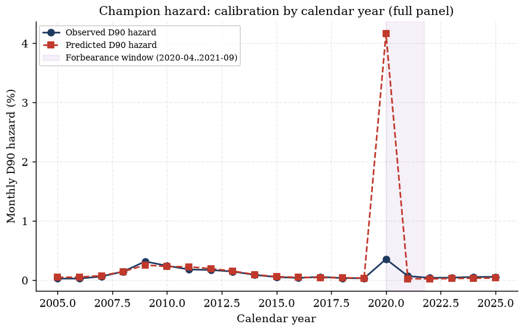
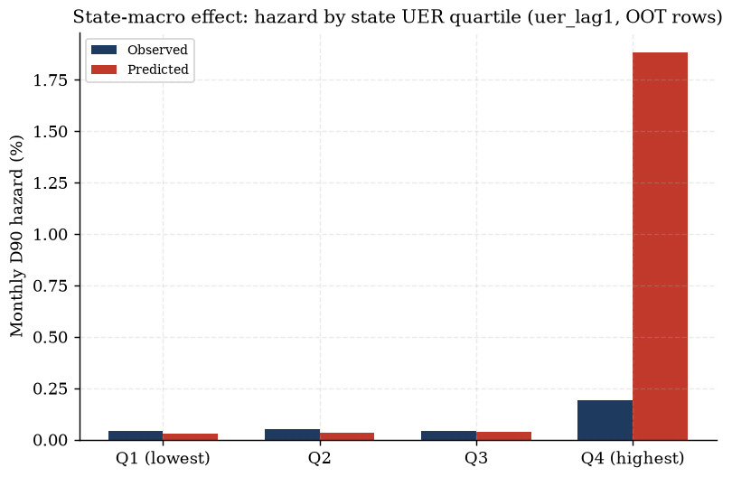
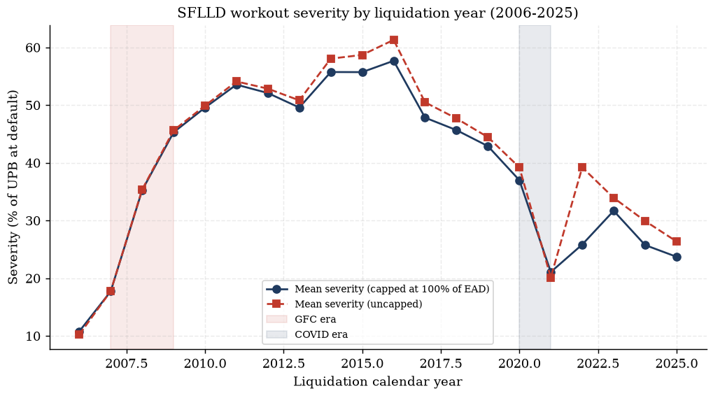
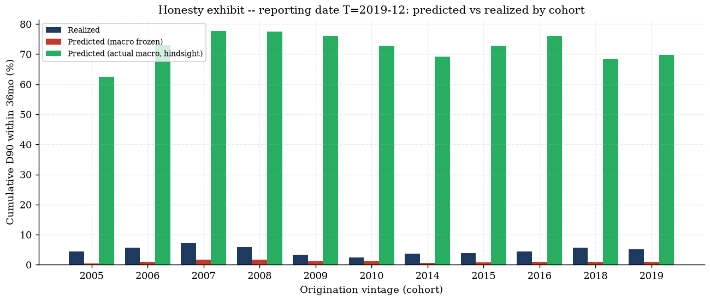
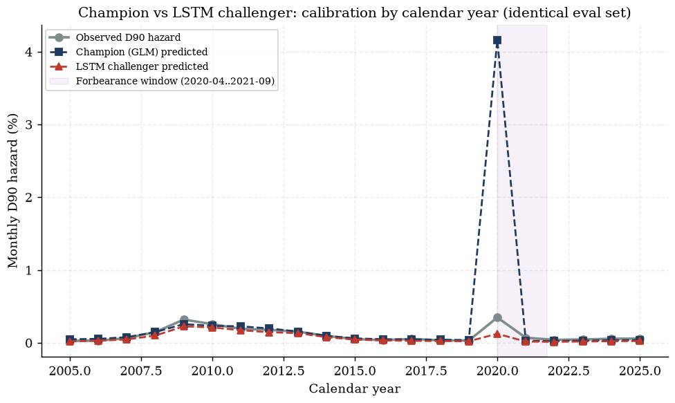

Corporate PD's structural cousin derived to close a two-chapter-old scope note; why the champion
hazard subsamples 5% of its own controls; the COVID additive dummy's own coefficient table overturning the case for
using it; the 9.42× honesty exhibit walked arithmetic-by-arithmetic; and a challenger whose 0.9925 headline
turns out to ride on 4.7% of the book
IFRS9 ECL Study-Notes Compendium — Chapter 12 of 13. Compiled from
outputs/freddie/hazard/hazard_report.md, outputs/freddie/lgd/lgd_report.md,
outputs/freddie/backtest/backtest_report.md, outputs/freddie/lstm/lstm_report.md,
knowledge/sources/ifrs9_credit_risk_notes.md §6.1/7/9.3/10.3, and
tests/fixtures/compute_pd.py (read/recomputed live this session) on 2026-07-19.
Chapter 11 built the SFLLD rung-3 panel and read it — real dates, real states, real realized losses — but
never fit a model on it. This chapter does: the Phase-B champion hazard (§12.6–12.7), the realized-loss
LGD (§12.8), the ALFRED-vintage backtest that is this compendium's model-risk centerpiece (§12.9–
12.10), and an LSTM challenger scored against the champion on an identical eval set (§12.11). Two theory
threads that Chapters 1–11 deliberately deferred land here too: the Merton structural model for
corporate/low-default PD (§12.2–12.4, closing derivation-backlog item D-4, explicitly
re-routed from Chapter 3's own scope note), and the case-control (WESML) sampling scheme every SFLLD fit in
this chapter depends on (§12.5). Two further concepts flagged as unplaced gaps in this campaign's own coverage
audit get closed along the way, each in the section where it belongs rather than bolted on: retail-scorecard
WOE/Information-Value lineage (§12.1, using the very fixture module §12.2's Merton example lives in) and
the general secured-LGD structural formula (§12.8, ahead of the fitted SFLLD instance). Source anchors:
outputs/freddie/hazard/hazard_report.md (12.5–12.7);
outputs/freddie/lgd/lgd_report.md (12.8);
outputs/freddie/backtest/backtest_report.md (12.9–12.10);
outputs/freddie/lstm/lstm_report.md (12.11);
knowledge/sources/ifrs9_credit_risk_notes.md §6.1, §7, §9.3, §10.3 via
tests/fixtures/compute_pd.py (12.1–12.4,
12.8).
12.1 Retail-scorecard lineage: WOE and Information Value (A6)
Before turning to corporate/low-default PD in §12.2, one loose end from the retail side is worth closing
first — topic A6 in this campaign's own concept map (Weight of Evidence, Information Value,
coarse-classed logistic scorecards), flagged in notes/plan/coverage.md as a gap unresolved through
Chapter 11 with no natural home in the Freddie-modelling chapters that follow it. It gets a home here for a
concrete reason: tests/fixtures/compute_pd.py — the same fixture module §12.2's Merton worked
example lives in — already carries a fully worked WOE/IV example (source: knowledge/sources/
ifrs9_credit_risk_notes.md §6.1), and scorecard-based PD is the retail-industry predecessor the
survival/hazard family (Chapters 2–3, and this chapter's own §12.6) grew out of.
Definitions — WOE and IV. For a coarse-classed characteristic split into bins $i=1,\dots,k$, with $g_i$
"good" (non-default) and $b_i$ "bad" (default) counts per bin, $G=\sum_i g_i$, $B=\sum_i b_i$:
$$\mathrm{Dist}^G_i=\frac{g_i}{G},\qquad \mathrm{Dist}^B_i=\frac{b_i}{B},\qquad
\mathrm{WOE}_i=\ln\!\frac{\mathrm{Dist}^G_i}{\mathrm{Dist}^B_i},\qquad
\mathrm{IV}=\sum_{i=1}^k\big(\mathrm{Dist}^G_i-\mathrm{Dist}^B_i\big)\,\mathrm{WOE}_i.$$
A bin with proportionally more goods than bads has $\mathrm{WOE}_i>0$ (protective); a bin with proportionally more
bads has $\mathrm{WOE}_i\lt0$ (risky). $\mathrm{IV}$ sums the (signed-weighted) bin-level separations into one
scalar summarising the whole characteristic's discriminatory power — the scorecard analogue of a chi-squared
statistic. The scorecard itself is then a logistic regression fit on the WOE-transformed inputs (each raw value
replaced by its bin's $\mathrm{WOE}_i$), which linearises an otherwise nonlinear bad-rate relationship before the
logit link.
Worked example — origination LTV, 10,000 applications, 500 bads (compute_pd.py,
§6.1). Four coarse-classed LTV bins:
LTV bin
goods
bads
bad rate
DistG
DistB
WOE
IV contrib.
≤60%
2,850
60
2.06%
0.30
0.12
+0.9163
0.1649
60–80%
3,800
150
3.80%
0.40
0.30
+0.2877
0.0288
80–90%
1,900
140
6.86%
0.20
0.28
−0.3365
0.0269
>90%
950
150
13.64%
0.10
0.30
−1.0986
0.2197
Total
9,500
500
—
1.00
1.00
—
0.4403
Source: tests/fixtures/compute_pd.pyTARGETS — every cell verified against
RESULTS this session (23/23 OK, run output pasted verbatim, no hand-typed value).
Derivation — the ≤60% bin, every substitution shown. $g_1=2850$, $b_1=60$, $G=9500$, $B=500$.
1. Bad rate: $b_1/(g_1+b_1)=60/2910=0.020619=2.06\%$.
6. Repeating steps 1–5 for the remaining three bins (table above) and summing:
$0.1649+0.0288+0.0269+0.2197=\mathbf{0.4403}=\mathrm{IV}_\text{total}$.
What this means. $\mathrm{IV}=0.4403$ sits in the band industry practice usually calls "strong" separation
for a single characteristic (a common rule-of-thumb ladder: below 0.02 useless, 0.02–0.1 weak,
0.1–0.3 medium, 0.3–0.5 strong, above 0.5 suspicious/likely overfit or leaking the target) — stated
here as an industry convention, not a claim the source text itself tabulates that exact ladder. Origination LTV is
therefore a genuinely strong univariate predictor of default on this synthetic book, consistent with §12.6's
finding that ltv10 survives as one of the champion hazard's strongest-signed covariates on the real
SFLLD panel too — the WOE/IV scorecard framework and the discrete-time hazard framework are different estimation
machines pointed at the same underlying credit-risk signal.
Gotcha — WOE is undefined when a bin has zero goods or zero bads. $\mathrm{Dist}^G_i=0$ or
$\mathrm{Dist}^B_i=0$ sends $\mathrm{WOE}_i$ to $\pm\infty$ (a $\ln 0$ term) — coarse classing must therefore
respect a minimum-count-per-bin floor, and any bin an automated binning algorithm produces with zero of either
class needs manual merging with a neighbour before WOE transformation, not a silent $\pm\infty$ pass-through.
Separately: WOE/IV coarse classing is normally required to be monotone in the underlying
continuous variable's risk ordering (here, bad rate rising 2.06%→3.80%→6.86%→13.64% as LTV rises) —
a non-monotone bin sequence is usually a sign the bin boundaries need adjusting, not a genuine U-shaped risk
relationship.
Check yourself.
Why does a WOE-positive bin (like ≤60% LTV, $\mathrm{WOE}=+0.9163$) correspond to LOWER credit risk, not
higher?
Answer
$\mathrm{WOE}_i=\ln(\mathrm{Dist}^G_i/\mathrm{Dist}^B_i)$ is positive exactly when the bin
holds a larger SHARE of the good population than of the bad population relative to their totals
($\mathrm{Dist}^G_i>\mathrm{Dist}^B_i$) — i.e. the bin is over-represented among non-defaulters. The ≤60% LTV
bin holds 30% of all goods but only 12% of all bads, so it is disproportionately safe, giving it a positive WOE
and (after the logistic regression on WOE-transformed inputs) a protective effect on the fitted score.
The >90% LTV bin contributes IV$_4=0.2197$ — roughly half the total IV$_\text{total}=0.4403$ — despite
holding only 950 of the 9,500 goods and 150 of the 500 bads (the smallest bin by raw count). Why does it still
dominate the IV sum?
Answer
IV contribution is $(\mathrm{Dist}^G_i-\mathrm{Dist}^B_i)\times\mathrm{WOE}_i$ — it rewards
bins with a LARGE PROPORTIONAL gap between their good-share and bad-share, not bins with large raw counts. The
>90% bin has the largest such gap (0.10 vs 0.30, a 0.20 spread) and the largest-magnitude WOE ($-1.0986$,
reflecting its 13.64% bad rate, the highest of the four bins) — both factors compound multiplicatively in its IV
contribution, so a small, high-conviction bin can dominate a characteristic's total IV over several larger,
weaker-signal bins.
Chapter 3's own scope note flagged this explicitly: "the Merton distance-to-default derivation (backlog
item D-4 ... is left for a later top-up pass rather than expanded in this build." This is that pass. The
project itself is retail-mortgage-only end to end — there is no corporate exposure or wholesale rating book to
apply this to — so, exactly as Chapter 3 framed it, this is a scope CONTRAST: the alternative PD-modelling
family used when the entity being assessed is a single rated firm with observable equity, not a retail loan-month
panel.
Theorem — Merton (1974). Equity is modelled as a call option on the firm's assets $V$, struck at the face
value of debt $D$, maturing at horizon $T$. With asset drift $\mu$ and volatility $\sigma_A$, the firm defaults iff
$V_T\lt D$.
The source states the result directly ("default occurs if $V_T\lt D$: $DD=\dots$, $PD=\Phi(-DD)$") without
showing the intermediate step from the asset SDE to that formula. Filling it in:
Derivation — from the asset SDE to $PD=\Phi(-DD)$, no step skipped.
1.The asset SDE. Firm asset value follows geometric
Brownian motion: $dV_t=\mu V_t\,dt+\sigma_A V_t\,dW_t$, $W_t$ a standard Brownian motion.
2.Itô's lemma on $\ln V_t$. For
$f(V)=\ln V$: $f'(V)=1/V$, $f''(V)=-1/V^2$. Itô's lemma gives
$d(\ln V_t)=f'(V_t)\,dV_t+\tfrac12 f''(V_t)\,(dV_t)^2
=\frac{1}{V_t}\big(\mu V_t\,dt+\sigma_A V_t\,dW_t\big)-\tfrac12\frac{1}{V_t^2}\big(\sigma_A^2V_t^2\,dt\big)
=\Big(\mu-\tfrac12\sigma_A^2\Big)dt+\sigma_A\,dW_t$
(using $(dV_t)^2=\sigma_A^2V_t^2\,dt$ from the quadratic-variation rule $(dW_t)^2=dt$).
3.Integrate $0\to T$. $d(\ln V_t)$ has constant
drift and diffusion coefficients, so integrating both sides gives
$\ln V_T=\ln V_0+\Big(\mu-\tfrac12\sigma_A^2\Big)T+\sigma_A W_T$, with $W_T\sim N(0,T)$ (Brownian motion's own
defining property) — i.e. $\ln V_T$ is exactly NORMALLY distributed (hence $V_T$ itself is LOGNORMAL), mean
$\ln V_0+(\mu-\tfrac12\sigma_A^2)T$, variance $\sigma_A^2T$.
4.Standardise. Define
$Z=\dfrac{\ln V_T-\ln V_0-(\mu-\tfrac12\sigma_A^2)T}{\sigma_A\sqrt{T}}$. By step 3, $Z\sim N(0,1)$ exactly (a
linear transform of a normal variable that subtracts its mean and divides by its standard deviation).
5.Define distance-to-default.
$$DD=\frac{\ln(V_0/D)+\big(\mu-\tfrac12\sigma_A^2\big)T}{\sigma_A\sqrt{T}}$$
— the number of standard deviations of $T$-horizon log-asset-return separating today's (drift-adjusted) expected
log-asset-value path from the default barrier $\ln D$.
6.Default event, rewritten in $Z$.
$V_T\lt D \iff \ln V_T\lt\ln D \iff \ln V_0+(\mu-\tfrac12\sigma_A^2)T+\sigma_A\sqrt{T}\,Z\lt\ln D$
(substituting step 4's definition of $Z$, rearranged) $\iff \sigma_A\sqrt{T}\,Z\lt\ln D-\ln V_0-(\mu-\tfrac12\sigma_A^2)T
\iff Z\lt-DD$ (dividing by $\sigma_A\sqrt{T}>0$ and substituting step 5's $DD$).
7.Take probabilities. $PD=P(V_T\lt D)=P(Z\lt-DD)=\Phi(-DD)$,
using $Z\sim N(0,1)$ from step 4 and $\Phi$ the standard normal CDF. $\blacksquare$
Worked example — distance to default (compute_pd.py, §7.2). $V_0=$€120m,
$D=$€100m, $\sigma_A=20\%$, $\mu=8\%$, $T=1$y:
$$DD=\frac{\ln(120/100)+(0.08-\tfrac12\times0.20^2)\times1}{0.20\times\sqrt{1}}
=\frac{0.18232+0.06}{0.20}=\frac{0.24232}{0.20}=\mathbf{1.2116},$$
$$PD=\Phi(-1.2116)=\mathbf{11.28\%}.$$
Verified this session: compute_pd.py prints merton_dd 1.211608 (target 1.2116, OK) and
merton_pd_pct 11.283128 (target 11.28, OK) — 23/23 fixture values matched.

Exhibit 12.1 — Merton (1974): simulated firm-value GBM paths against the default barrier
$D$, and the lognormal terminal distribution of $V_T$ with the default region shaded (own build,
notes/assets/img/ch12/build_diagrams.py, reproducing compute_pd.py's $DD=1.2116$,
$PD=11.28\%$ exactly).
What this means. A leveraged, volatile firm ($V_0$ close to $D$, high $\sigma_A$) sits close to its default
barrier and carries a high structural PD; the same firm with a lower asset volatility or a bigger equity cushion
($V_0/D$ further above 1) sees $DD$ rise and $PD$ fall correspondingly. Because $DD$ depends on TODAY's asset value
$V_0$, and equity — hence, via the option-pricing link below, the market's implied $V_0$ — moves with the cycle,
Merton-style structural PDs are inherently POINT-IN-TIME, in the same sense Chapter 5's Vasicek $PD_{PIT}(Z)$
is point-in-time: both derive today's default probability from today's realisation of a systematic/asset-level
state variable, not from a cycle-averaged long-run rate.
Gotcha — $V$ and $\sigma_A$ are never directly observable; only equity $E$ and its volatility $\sigma_E$ are.
The source's own theorem box notes the practical fix: back out $V$ and $\sigma_A$ from the SIMULTANEOUS equations
$E=V\Phi(d_1)-De^{-rT}\Phi(d_2)$ (equity as a Black–Scholes call on assets) and
$\sigma_E=(V/E)\Phi(d_1)\sigma_A$ (option-delta scaling of volatility) — the Crosbie–Bohn / KMV iteration.
A second, separate gotcha: the derivation above uses the REAL-WORLD drift $\mu$, giving the PHYSICAL default
probability; substituting the risk-free rate $r$ for $\mu$ (and using $\Phi(-d_2)$ in the option-pricing
convention) gives the RISK-NEUTRAL default probability instead — the two are not interchangeable, and using the
wrong one is a common misapplication (risk-neutral PDs price default risk into a derivative; physical PDs are what
an IFRS 9 ECL calculation needs).
Check yourself.
In step 2's Itô's lemma expansion, where does the $-\tfrac12\sigma_A^2$ term in the drift of $\ln V_t$
come from, and why is it ABSENT from the drift of $V_t$ itself?
Answer
It comes from the SECOND-ORDER (quadratic-variation) term in Itô's lemma,
$\tfrac12 f''(V_t)(dV_t)^2$, which is zero for ordinary (non-stochastic) calculus but is NOT zero here because
$(dV_t)^2=\sigma_A^2V_t^2\,dt$ is order $dt$, not order $(dt)^2$, for an Itô process. $V_t$ itself has no
such correction because its own SDE is specified directly with drift $\mu V_t$ — the correction only appears when
you transform to a NONLINEAR function of $V_t$ (here $\ln V_t$, via $f''(V)=-1/V^2\ne0$) and is exactly what
makes $\ln V_T$ normally (not $V_T$ log-of-normally-with-mean-$\mu T$) distributed.
If a bank observes two firms with the identical $DD=1.2116$ (hence identical $PD=11.28\%$) but one reaches it
via high leverage / low volatility and the other via low leverage / high volatility, does Merton's PD formula
distinguish them?
Answer
No — $DD$ is a single scalar that FOLDS leverage ($V_0/D$) and volatility ($\sigma_A$)
together via $\ln(V_0/D)/(\sigma_A\sqrt T)$; two firms with different underlying (leverage, volatility) pairs
that happen to produce the same $DD$ get the identical Merton PD. This is a genuine information loss versus
reporting leverage and volatility separately — a limitation shared with any single-scalar distance measure, and
part of why practitioners (Moody's KMV-EDF) supplement $DD$ with an empirical default-frequency mapping rather
than relying on the raw $\Phi(-DD)$ alone.
Drag any of the five inputs; the widget recomputes $DD$ and $PD=\Phi(-DD)$ from the real formula (step 5 and
step 7 above) client-side. Defaults reproduce compute_pd.py's own worked example exactly
($DD=1.2116$, $PD=11.28\%$) — drag any slider and back it to $V_0=120$, $D=100$, $\sigma_A=0.20$, $\mu=0.08$,
$T=1$ to confirm the widget lands on the golden value again.
Live widget — Merton distance-to-default
12.4 Bridging Merton to Vasicek and to Pluto–Tasche low-default estimation
Three PD-estimation ideas now sit side by side in this compendium — Merton's single-firm structural model
(§12.2, above), Chapter 5's one-factor Gaussian copula / Vasicek $PD_{PIT}(Z)$ (derivation-backlog item
D-5), and Pluto–Tasche's low-default-portfolio estimator. This section is the theory closure the campaign
brief asks for: showing they are not three unrelated formulas but one idea (an unobserved, normally-distributed
"asset-value" latent variable triggers default when it crosses a threshold) applied at three different levels —
a single firm, a correlated portfolio, and a portfolio with too few defaults to fit anything at all.
Theorem — the shared latent-variable structure. Merton's standardised terminal log-asset-return
($Z=[\ln V_T-\ln V_0-(\mu-\tfrac12\sigma_A^2)T]/(\sigma_A\sqrt T)$, §12.2 step 4) and Chapter 5's
standardised asset return ($A_i=\sqrt{\rho}\,Z+\sqrt{1-\rho}\,\varepsilon_i$, the Vasicek/ASRF conditioning
theorem — Chapter 5's own symbol; the source text's theorem box calls the same object $X_i$) are the SAME
object at two different levels of aggregation. Merton's $Z$ is a single firm's own
idiosyncratic-plus-systematic asset shock, with an INDIVIDUALLY calibrated default threshold $-DD$ that already
bakes that one firm's leverage and volatility in. Vasicek's $A_i$ EXPLICITLY splits a firm $i$'s asset return into
a shared systematic factor $Z\sim N(0,1)$ (the same symbol, now standing for the whole portfolio's common macro/
market shock) weighted by $\sqrt\rho$, plus an idiosyncratic residual $\varepsilon_i\sim N(0,1)$ weighted by
$\sqrt{1-\rho}$ — and calibrates every firm in the (homogeneous) portfolio to the SAME threshold
$\Phi^{-1}(PD_{TTC})$, so that the unconditional default probability equals a stated through-the-cycle rate. Setting
$\rho=0$ collapses Vasicek's $A_i$ back to a pure idiosyncratic shock, structurally identical to treating every
firm's Merton default trigger as independent — recovering the textbook's own point that $\rho$ is precisely what a
single-firm Merton model has no mechanism to represent (one firm has no "co-movement with a portfolio" to speak of).
What this means. Merton is the MICROFOUNDATION — it explains, from a firm's own balance sheet, why a
default threshold on a normally-distributed latent variable is an economically sensible model of default in the
first place. Vasicek/ASRF (Chapter 5, derivation D-5) is the PORTFOLIO GENERALISATION — it keeps the same
threshold-crossing idea but adds asset correlation $\rho$ so that a whole book's PD can be conditioned on ONE shared
macro factor $Z$, which is exactly the IFRS 9 PIT-conditioning machinery Chapter 5 builds
$PD_{PIT}(Z)=\Phi\big([\Phi^{-1}(PD_{TTC})-\sqrt\rho Z]/\sqrt{1-\rho}\big)$ from. Neither model is "more correct"
than the other — they answer different questions (one firm's own PD from its own balance sheet, vs a portfolio's
PIT PD from a calibrated TTC anchor and a cycle state) and Chapter 5's own conditioning derivation is the one
this project's engine actually uses, because the project has a retail LOAN PORTFOLIO, not individual rated firms
with observable equity.
Theorem — Pluto–Tasche "most prudent estimation" (MPE). With rating grades ordered best→worst and
few or zero observed defaults, estimate each grade's PD as the grade's UPPER CONFIDENCE BOUND at level $\gamma$ of
the binomial likelihood, imposing the monotonicity constraint $p_A\le p_B\le\dots$ For grade $g$, pool all
obligors in grade $g$ AND WORSE ($n_{\ge g}$ obligors, $d_{\ge g}$ defaults among them); with zero observed defaults
the bound solves $(1-p)^{n_{\ge g}}=1-\gamma$, giving
$$\hat p_g=1-(1-\gamma)^{1/n_{\ge g}}.$$
Worked example — two grades, zero defaults, $\gamma=90\%$ (source text, verified this session):
grade A has 80 obligors, grade B has 40; pooling "$g$ and worse" means grade A's own bound pools ALL 120 obligors
(A is the best grade, so "A and worse" is the whole 120-obligor portfolio), while grade B's bound pools only its own
40 (B is the worst grade):
$$\hat p_A=1-0.1^{1/120}=1.9005\%\approx\mathbf{1.90\%},\qquad
\hat p_B=1-0.1^{1/40}=5.5939\%\approx\mathbf{5.59\%}.$$
Recomputed this session (python3 one-liner, not a gated fixture — no compute_*.py module
owns this example): both values match the source's printed figures to the displayed precision.
What this means — the three-model closure. Pluto–Tasche answers the question Merton and Vasicek
cannot: what to do when a portfolio has genuinely too few (or zero) observed defaults to fit ANY statistical model,
Merton included (Merton needs equity market data a non-listed or investment-grade-only book may not have; Vasicek's
$\rho$ calibration needs a default-rate TIME SERIES to invert). Pluto–Tasche sidesteps estimation entirely and
asks instead "what is the LARGEST PD consistent with the observed (zero-or-few) defaults at confidence $\gamma$,
given the grade ordering must be monotone" — a calibration-FLOOR answer, not a point estimate. It shares the
binomial-upper-confidence-bound logic Chapter 3's own binomial-backtest derivation (§3.10, D-9, Jeffreys
interval) already introduced for validating a PD grade AFTER the fact; here the same statistical machinery is run in reverse,
to MANUFACTURE a PD when there is not yet enough data to validate one at all.
Gotcha — Pluto–Tasche is a PD-only, deliberately conservative floor, not an unbiased estimator. The
source's own pitfall box is explicit: it "addresses PD only (not LGD/EAD), is sensitive to the confidence level,
and is criticised as over-conservative — which conflicts with IFRS 9's unbiased requirement." Using
the raw MPE output directly as an IFRS 9 PD input risks materially overstating ECL for a genuinely low-risk,
low-default book; the source's own recommendation is to use it as a calibration floor/benchmark with the
conservatism explicitly quantified, or to replace it with a Bayesian posterior mean (Jeffreys/expert-prior, Tasche
2013) that does not bake in an arbitrarily chosen $\gamma$.
Check yourself.
Why does grade A's Pluto–Tasche bound ($\hat p_A=1.90\%$) come out LOWER than grade B's
($\hat p_B=5.59\%$), even though BOTH grades have observed zero defaults?
Answer
Grade A's bound pools all 120 obligors ("A and worse" — A is the best grade, so this includes
every obligor in the portfolio), while grade B's bound pools only its own 40 obligors ("B and worse" — B is the
worst grade, so nothing is worse than it). A larger sample size with zero defaults is stronger evidence of a
genuinely low default rate, so the upper confidence bound shrinks as $n_{\ge g}$ grows — $\hat p_g=1-(1-\gamma)^{1/n_{\ge g}}$
is monotonically DECREASING in $n_{\ge g}$.
In one sentence, what does setting $\rho=0$ in Chapter 5's Vasicek formula do to its relationship with
Merton's single-firm model, and why?
Answer
It collapses $A_i=\sqrt\rho Z+\sqrt{1-\rho}\varepsilon_i$ to $A_i=\varepsilon_i$ — a pure
idiosyncratic shock with no shared systematic component — which is structurally the same as treating every
obligor's Merton-style default trigger as statistically independent of every other obligor's, i.e. a portfolio
with zero asset correlation behaves, threshold-crossing-wise, like a collection of independent single-firm
Merton models.
12.5 Case-control (WESML) sampling: the Manski–Lerman weighted likelihood
Every SFLLD loan-month-panel fit in this chapter (the champion hazard, §12.6–12.7; the
as-of-$T$ backtest refits, §12.9; the LSTM's own training run, §12.11) is built on a case-control
SUBSAMPLE, not the full 17,703,723-loan-month champion training panel. This section derives why that is
statistically defensible, not merely a computational shortcut. (§12.8's realized-loss LGD is a loan-level
fit on the 44,593-loan D90 population itself, not a loan-month panel — cure/liquidation/unresolved there is already
a $\approx$60%/33%/7% split (§12.8's outcome-partition table), not hazard's 0.15% monthly rate, so the
rare-event problem this section solves does not arise and lgd_report.md reports no case-control
weighting at all.)
The problem. The champion training panel has 17,703,723 loan-months and only 26,284 D90 events — a
$0.1485\%$ monthly hazard. Fitting a GLM on all 17.7M rows directly is computationally impractical at this
environment's memory budget (hazard_report.md §6, declared simplification). Case-control
(choice-based) sampling keeps every event row but randomly subsamples the non-event ("control") rows at
rate $r$ — here $r=5\%$ — then reweights so the fitted model is still consistent for the FULL population.
Derivation — the Manski–Lerman (1977) weighted-likelihood argument, why weights 1 and $1/r$ give an
unbiased score.
1.Population log-likelihood. For a population of
$N$ loan-month rows with event indicator $y_i\in\{0,1\}$ and model probability $p_i(\theta)$, the FULL-population
log-likelihood is $\ell(\theta)=\sum_{i=1}^N\big[y_i\ln p_i(\theta)+(1-y_i)\ln(1-p_i(\theta))\big]
=\sum_{i=1}^N \ell_i(\theta)$. This is what an infeasible full-population fit would maximise.
2.The sampling design. Each population row $i$
is included in the SAMPLE with selection probability $s_{y_i}$: $s_1=1$ for every event row (all events kept),
$s_0=r=0.05$ for every non-event row (a random 5% control subsample). Let $S_i\in\{0,1\}$ be the (random) selection
indicator for row $i$, so $P(S_i=1)=s_{y_i}$.
3.The inverse-probability (Horvitz–Thompson) weight.
Define $w_i=1/s_{y_i}$ — i.e. $w_i=1$ if $y_i=1$ (event), $w_i=1/r=1/0.05=20$ if $y_i=0$ (control). This is exactly
hazard_report.md's own freq_weight convention: "events by freq_weight=1,
controls reweighted by freq_weight=1/rate."
4.The weighted sample log-likelihood. The fit
actually maximises $\ell_w(\theta)=\sum_{i=1}^N S_i\,w_i\,\ell_i(\theta)$ — a sum over ALL $N$ population rows, but
with $S_i=0$ zeroing out every row that was not sampled, so in practice only sampled rows contribute.
5.Take the expectation over the sampling design.
Holding $\theta$ and the population $\{y_i,\ell_i(\theta)\}$ fixed, and taking expectation only over the random
$S_i$'s: $\mathbb E[S_i]=P(S_i=1)=s_{y_i}$, so
$\mathbb E\big[S_i\,w_i\,\ell_i(\theta)\big]=s_{y_i}\times\dfrac{1}{s_{y_i}}\times\ell_i(\theta)=\ell_i(\theta)$
— the selection probability and its own reciprocal weight cancel EXACTLY, for every row, regardless of whether
$y_i=1$ or $y_i=0$.
6.Sum over the population.
$\mathbb E\big[\ell_w(\theta)\big]=\mathbb E\Big[\sum_{i=1}^N S_i w_i\ell_i(\theta)\Big]
=\sum_{i=1}^N \mathbb E\big[S_i w_i\ell_i(\theta)\big]=\sum_{i=1}^N \ell_i(\theta)=\ell(\theta)$
— the WEIGHTED SAMPLE log-likelihood is unbiased for the FULL-POPULATION log-likelihood, for every value of
$\theta$. Differentiating both sides in $\theta$ (score function) preserves the equality, so the weighted score is
unbiased for the population score too — the Manski–Lerman result, and (per hazard_report.md's own
note) it holds for ANY GLM link function, not just logit, since nothing in steps 1–6 used a specific
functional form for $p_i(\theta)$. $\blacksquare$
Worked example — the actual SFLLD numbers (hazard_report.md §1, recomputed this session):
Quantity
Value
Weight
Champion train loan-months
17,703,723
—
D90 events (kept in full)
26,284
1
Non-event rows (population)
17,677,439
—
Non-event rows sampled at $r=5\%$ ($\approx$)
883,872
1/0.05 = 20
NaN-covariate rows dropped (events + controls)
83,680
—
Final fit sample
826,476
—
— events in fit sample
24,611
1
— controls in fit sample
801,865
20
$17{,}703{,}723-26{,}284=17{,}677{,}439$ non-event rows; $17{,}677{,}439\times0.05\approx883{,}872$ sampled controls
(recomputed this session, python one-liner); $826{,}476-24{,}611=801{,}865$ surviving controls after the 83,680-row
NaN drop removes $26{,}284-24{,}611=1{,}673$ events and the remaining $\approx82{,}007$ dropped rows from the
control side. Every control row that DOES survive carries weight 20 into the likelihood — it is standing in,
statistically, for itself plus 19 other unsampled non-event rows.
What this means — the inference caveat, stated with the actual numbers. The weighted POINT ESTIMATES are
consistent (step 6's unbiasedness result) — the champion coefficients in §12.6 are not biased by the
case-control subsampling. But freq_weights tells the fitting software to scale reported standard
errors/p-values AS IF the fit sample were a genuine full-population dataset of 17.7M independent rows — which
excludes an entirely separate source of noise: the Monte-Carlo randomness of exactly WHICH 5% of controls got
drawn. hazard_report.md §5's own second-seed stability check (seed 1234 vs the champion's seed 42)
quantifies this directly: delta_uer_lag1's coefficient swings 0.128 between seeds against a nominal
standard error of only 0.0224 — a ratio of $0.128/0.0224\approx\mathbf{5.7\times}$ — and hpi_growth_lag1
swings 0.830 against a nominal SE of 0.4759, $0.830/0.4759\approx\mathbf{1.7\times}$. Practically: the nominal
$p\lt10^{-190}$-style significance the coefficient tables in §12.6 report is not fabricated, but it materially
UNDERSTATES the true sampling uncertainty on the MACRO terms specifically (the terms this chapter conditions
scenario-based ECL on) — a rigorous treatment would need a sandwich/robust variance estimator this fit does not
report, and any reader treating the nominal macro-coefficient SEs as the full uncertainty picture should instead
read seed_stability.csv's swing-vs-SE ratios as the operative uncertainty statement.
Gotcha — "sign flips = 0 across seeds" is reassuring, "max relative coefficient difference = 0.486" sounds
alarming, and BOTH readings can be true at once without contradiction. The 0.486 relative swing lands on
cr(loan_age, df=5)[3], a spline basis coefficient whose champion-fit point estimate is itself
near zero (0.0449, hazard_report.md §2's full coefficients.csv table — not one of
the six core drivers §12.6 reprints) — a RELATIVE measure overstates instability for a coefficient that is small to begin
with (a modest absolute swing divided by a tiny base produces a large ratio). The ABSOLUTE swings on the macro
terms that actually matter for scenario-conditional ECL (§12.6's $\delta$UER and HPI-growth coefficients) are
the ones worth the 5.7×/1.7× framing above — chasing the single largest RELATIVE swing in the whole
coefficient table would have flagged the wrong term as the chapter's headline caveat.
Check yourself.
Why does an event row get weight 1 while a control row gets weight 20, rather than the other way around?
Answer
Weight is the RECIPROCAL of the row's own selection probability, $w_i=1/s_{y_i}$. Every
event row is sampled with probability $s_1=1$ (all kept), so $w_i=1/1=1$. Every non-event row is sampled with
probability $s_0=r=0.05$, so $w_i=1/0.05=20$ — each sampled control is standing in for the 1 sampled plus 19
unsampled non-event rows the design threw away, and weighting it by 20 restores its correct share of the
population likelihood.
Does the Manski–Lerman unbiasedness result (step 6) depend on using a LOGIT link specifically for
$p_i(\theta)$, the way the champion hazard's cloglog link might seem to need special handling?
Answer
No — step 6's derivation never assumes a specific functional form for $p_i(\theta)$; it
only uses linearity of expectation and the fact that $S_iw_i$'s expectation is exactly 1 for every row regardless
of $y_i$. The result therefore holds for cloglog, logit, or any other GLM link, exactly as
hazard_report.md's own module docstring states ("valid for any GLM link, not just logit").
12.6 The champion refit: coefficients, macro cards, discrimination & seasoning
Sample & split (hazard_report.md §1). Champion train: performance month
$\le$ 2016-12 — 17,703,723 loan-months, 26,284 D90 events. OOT: performance month $\ge$ 2017-01 —
21,818,842 loan-months, 18,309 events. COVID (2020-04..2021-09) lands entirely inside OOT, by construction —
the champion train window never sees it, which is exactly why §12.7's separate COVID-window fits need their
OWN extended estimation window. Only the DEFAULT (D90) cause-specific hazard is fit — no competing-risk
prepayment hazard in this refit, a declared simplification versus the DCR champion's dual-hazard framing
(hazard_report.md §6).
Core risk-driver coefficients
Term
Coef.
Hazard ratio
p-value
Sign
fico_s
−0.9257
0.396
<1e-300
−
dti_s
+0.2313
1.260
<1e-300
+
ltv10
+0.3225
1.381
<1e-300
+
uer_lag1
+0.0950
1.100
1.42e-208
+
delta_uer_lag1
+0.6671
1.949
2.97e-194
+
hpi_growth_lag1
−3.3442
0.035
2.1e-12
−
Source: outputs/freddie/hazard/hazard_report.md §2, coefficients.csv.
$fico_s=credit\_score/100$; $dti_s=dti/10$; $ltv10=updated\_ltv/10$ (winsorised at 300%); all three macro terms
lagged 1 month.
Fitted-signs-vs-priors misses — stated, not buried. Three categorical terms fit AGAINST the variable
dictionary's prior expected direction: occupancy_status[T.S] (second home) fit $-0.193$ against a prior
of $+$; loan_purpose[T.N] (no-cash-out refi) fit $+0.270$ against a prior of $-$; channel[T.C]
(correspondent) fit $-0.234$ against a prior of $+$. All three are CONDITIONAL effects (given FICO/DTI/updated-LTV/
macro already in the model), so a flipped categorical sign here reads as SAMPLE COMPOSITION, not a causal claim —
e.g. second-home borrowers who clear the same FICO/LTV bar as owner-occupants default less in this sample; the core
continuous risk drivers (FICO $-$, DTI $+$, LTV $+$, UER $+$, $\Delta$UER $+$, HPI growth $-$) all match their
priors cleanly.
Macro coefficient cards (Requirement 12 style)
uer_lag1
delta_uer_lag1
hpi_growth_lag1
Source
State-level FRED series where available ({POSTAL}UR
monthly, {POSTAL}STHPI quarterly reindexed to monthly and forward-filled), national UNRATE
fallback for the handful of states lacking a state-level series (Chapter 11 §11.5) — a genuine
STATE-level upgrade over the DCR champion's national-only macro (Chapter 3).
Transformation
level, pp
1-month change, pp
log-growth
Lag & why
1 month — a scoring model may not use a macro print
before it is realistically knowable/actionable; the DCR champion documents the analogous timing convention
(Chapter 3).
Units
1 unit = 1 percentage point of state UER
1 unit = 1pp month-on-month
change in state UER
1 unit = 1 FULL log-unit of HPI growth (not 1%) — see gotcha below
$\exp(-3.3442)=0.0353$ per FULL log-unit; per +1pp of HPI growth, $\exp(-3.3442\times0.01)=\exp(-0.03344)=0.9671$
⇒ hazard ×0.9671 (a 3.3% proportional DECREASE)
Economic channel
Cash-flow channel — a higher unemployment LEVEL sustains
income-loss risk in the state
Labour-market MOMENTUM — a deteriorating (rising) UER trend signals
fresh income shocks the level alone has not yet fully captured
Collateral/equity-building channel —
rising home prices rebuild borrower equity, cutting both strategic-default incentive and negative-equity risk
Gotcha — the "0.01 vs 1pp" misreading, worked with the real coefficient.hpi_growth_lag1's raw
coefficient ($-3.3442$) looks enormous next to uer_lag1's ($+0.0950$) — reading it naively as "a 1-unit
HPI-growth move multiplies the hazard by $\exp(-3.3442)=0.0353$, a 96.5% cut" badly overstates the effect, because
HPI growth is recorded as a LOG-GROWTH RATE, where "1 unit" means 100 LOG-PERCENTAGE-POINTS of quarterly house-price
growth — a move that essentially never happens. The economically meaningful comparison is per +1 PERCENTAGE POINT
of growth: $\exp(-3.3442\times0.01)=0.9671$, a 3.3% hazard reduction — two orders of magnitude smaller than the
naive per-unit reading, and the correct one to quote alongside uer_lag1's per-pp effect above.
Cross-model comparison — SFLLD state/monthly vs DCR national/quarterly. The DCR champion's own national
panel (outputs/hazard/hazard_ratios.md) decomposes the same labour-market channel into a LEVEL term
($-0.3668$) and a 4-QUARTER momentum term ($+0.6135$), reporting their combined net effect: a +1pp shock moves both
one-for-one, so the net hazard effect is $\exp(-0.3668+0.6135)=\exp(0.2467)=1.280$ per pp — PD rises with
unemployment, exactly the qualitative direction SFLLD's own state-level decomposition finds (level $+0.0950$,
momentum $+0.6671$, both individually POSITIVE rather than DCR's offsetting level/momentum pair). These are NOT
directly comparable numbers — DCR is national and quarterly, SFLLD is state-level and monthly, and DCR's
momentum window is 4 quarters vs SFLLD's 1 month — but both models agree on the substantive finding that
unemployment DETERIORATION (the momentum term) matters more per unit than the static level, and both find HPI
growth protective. The state-level upgrade (Chapter 11 §11.14's $r=0.89$ collateral-channel finding) is
what lets SFLLD condition directly on state UER at all, something the DCR national panel structurally cannot do.
Discrimination & seasoning
Champion train AUC: 0.8536 (floor 0.65). OOT AUC: 0.6847. McFadden pseudo-$R^2$
(fit sample): 0.1197. Chapter 3 already put this beside the DCR champion's own AUC (0.748 train / 0.661 OOT):
despite a vastly larger, richer, state-level dataset lifting TRAIN AUC by over 10 points (0.748→0.854), the OOT
AUC gain is far smaller (0.661→0.685) — the same overfitting-to-calm-history pattern Chapter 3 reads
off the DCR numbers alone repeats here with a bigger, real-data model.
Seasoning caveat, stated exactly as the source states it. The EMPIRICAL train-window hazard-by-age profile
is a SINGLE hump peaking at 42–48mo (0.256% monthly) — consistent with the DCR champion's own
~12-quarter peak. The fitted reference-row curve's SECOND, higher peak near 108mo (visible above) is NOT a genuine
seasoning effect: train rows with age $\ge$ 96mo come exclusively from the 2005–2008 crisis vintages (later
vintages are too young by 2016-12), so the spline's late-age rise is unobserved COHORT QUALITY absorbed into the age
baseline, not seasoning. Ages beyond 143mo are natural-spline linear EXTRAPOLATION with no train support at all.

Exhibit 12.3 — Calibration by calendar year, full panel, champion coefficients scored
throughout. Embedded from outputs/freddie/hazard/calibration_by_year.png.
The 2020 calibration row: observed 0.357% vs predicted 4.162% monthly —
the champion, fit on pre-COVID data, scores straight through the forbearance window with pre-COVID coefficients;
April-2020's state UER jump ($\approx$+10pp month-on-month) enters delta_uer_lag1 (coef $+0.667$,
$\approx$+7 on the linear predictor) and saturates the cloglog link. This is macro EXTRAPOLATION, not a data or
code error — and it is precisely why §12.7's regime-treatment comparison exists.

Exhibit 12.4 — Predicted vs observed hazard by state uer_lag1 quartile, OOT
rows. Embedded from outputs/freddie/hazard/state_uer_effect.png.
Check yourself.
A colleague reads hpi_growth_lag1's coefficient ($-3.3442$) next to uer_lag1's
($+0.0950$) and concludes "house-price growth matters about 35× more than unemployment level for this
model." What is wrong with that comparison?
Answer
The two coefficients are on DIFFERENT UNIT SCALES: uer_lag1 is already in
percentage points (1 unit = 1pp), while hpi_growth_lag1 is a full log-growth rate (1 unit = 100
log-percentage-points). Comparing raw coefficients directly conflates unit scale with economic magnitude; the
correct per-pp comparison ($\exp(0.0950)=1.0997$ vs $\exp(-3.3442\times0.01)=0.9671$) shows the two effects are
actually much closer in per-percentage-point magnitude than the raw coefficients suggest.
Why does Exhibit 12.4's Q4 (highest state UER) bar show predicted hazard (≈1.9%) far exceeding
observed (≈0.2%), when the champion model's OOT AUC (0.6847) suggests real discriminative power?
Answer
AUC measures RANKING (whether higher-scored loans default more often than lower-scored ones)
and is invariant to a uniform overprediction across the whole scored population — it says nothing about
CALIBRATION (whether the predicted LEVEL matches the observed level). Q4 pools OOT rows across the whole OOT
window, including the COVID months where §12.6's own calibration-by-year exhibit shows the champion
saturates badly; a state UER quartile with more COVID-window rows will show worse calibration even though the
model still ranks loans correctly within any given month.
12.7 COVID three-way: naive / additive / exclude — the review-overturn story
The champion train window ($\le$2016-12) never sees COVID by construction. To actually TEST regime treatments,
hazard_report.md §3 extends the estimation window to $\le$2021-09-01 (train + pre-COVID OOT + the
forbearance window itself) and fits three variants, all scored — never re-fit — on an identical,
genuinely unseen OOT2 window (performance month > 2021-09-01):
Variant
Estimation window
OOT2 AUC
naive
$\le$2021-09-01, COVID rows in the likelihood, no adjustment
0.7553
additive
$\le$2021-09-01, COVID rows in + a calendar regime dummy
0.7547
exclude
$\le$2021-09-01, COVID rows EXCLUDED from the likelihood
0.7509
Exhibit 12.5 — COVID regime comparison: calibration by year and calibration ratio,
naive/additive/exclude. Embedded from outputs/freddie/hazard/covid_calibration_comparison.png. The
right panel's exclude line collapsing to 0.06 in 2020 is the SAME saturation-through-a-blind-spot pattern
§12.9's backtest exhibit finds independently — exclude is scored straight through the window it never
trained on, exactly like the champion itself.
The review-overturn story, told with the coefficient table above. The INTUITIVE first answer to "how do we
handle a regime the model never saw" is the ADDITIVE variant: add a calendar dummy for the forbearance window,
let it absorb the anomaly, keep the rest of the specification (and its macro sensitivity) intact. The additive
dummy DOES fit strongly positive ($+1.482$, hazard ratio 4.40) and DOES deliver the best in-window 2020 calibration
of the three (observed/predicted 1.22, vs naive's 2.23). But the coefficient table above is the reviewer's overturn
of that intuition: the dummy does NOT repair the structural macro block — delta_uer_lag1 stays
SIGN-FLIPPED at $-0.130$ (vs naive's $-0.204$, barely different), and hpi_growth_lag1 OVERSHOOTS to
$-6.584$ (nearly double the champion's own $-3.344$). A single calendar-level dummy cannot undo a JOINT
covariate-outcome distortion — the UER spike and the forbearance-shielded delinquency ladder co-move inside
the window, and no scalar dummy variable can separate that co-movement back into a clean macro signal. The
report's own text states this reversal explicitly: "The additive dummy is NOT recommended as previously
argued... 'the dummy is doing its job' is contradicted by the fit."
Verdict: exclude. It is the ONLY variant whose structural macro block survives intact
(delta_uer_lag1 $+0.774$, hpi_growth_lag1 $-3.307$, uer_lag1 $+0.108$ —
all close to the champion's own $+0.667/-3.344/+0.095$), and it is CONSISTENT with the champion itself, whose train
window already pre-dates COVID by construction. The OOT2 AUC spread across all three (0.7553/0.7547/0.7509) is far
too small to override that structural argument — a 0.4-point AUC difference does not compensate for a sign
flip on the macro terms an IFRS 9 scenario overlay needs to condition ECL on.
A13 closure — reading the "scoring overlay" recommendation through the source's own four-part overlay
framework.hazard_report.md's own recommendation is explicit: "Handle any future
forbearance-style regime as an explicit scoring overlay rather than an in-likelihood dummy." Knowledge-source
§9.3 (topic A13, post-model adjustments) supplies the framework a defensible overlay needs, in four parts:
Trigger — a named model blind spot or novel risk. Here: the forbearance-window structural
distortion §12.7 documents directly — the model cannot represent the co-movement between the UER spike and the
forbearance-shielded delinquency ladder within the likelihood at all, regardless of specification.
Quantification basis — sensitivity/benchmark, not a plug. Here: the exclude variant's OWN
residual caveat supplies it — 2022–2025 observed hazard runs $\approx$1.62–1.79$\times$ predictions
even under the best-behaved (exclude) treatment, a measured post-COVID LEVEL SHIFT the regime treatment itself
leaves unresolved and hands forward.
Allocation — to stages/segments/vintages so staging still functions, not a blanket
total-ECL adjustment (which the ECB's own July 2024 thematic review explicitly discourages as contrary to
IFRS 9 principles). Here: scoped to loans scored through or shortly after a forbearance-style window, not the
whole book.
Exit criteria — what evidence retires or re-models it. Here: enough post-forbearance
data accumulating to let a re-specified structural model re-identify the regime cleanly in-likelihood, or the
underlying assistance programme formally sunsetting.
This is exactly the "scoring overlay, not an in-likelihood dummy" recommendation — made precise, not left as
a one-line aside.
What this means. The residual caveat applies to ALL THREE variants, not just exclude: 2022–2025
observed hazard runs $\approx$1.62–1.79$\times$ predictions (exclude), a POST-COVID LEVEL SHIFT the regime
treatment does not fix by construction (it addresses the IN-WINDOW distortion, not what comes after). This residual
is exactly the kind of finding §12.9's backtest exhibit is built to surface systematically across many
reporting dates, not just the COVID window — the two sections should be read together, not independently.
Gotcha — "the additive variant has the best 2020 in-window calibration" and "the additive variant is the best
COVID treatment" are not the same claim. Calibration RATIO (observed/predicted near 1.0) measures whether the
predicted LEVEL matches reality in that specific window; it says nothing about whether the underlying macro
SENSITIVITIES the model would need for forward-looking, scenario-conditional projection are intact. The additive
variant wins on the first axis and fails badly on the second — exactly the axis that matters for an
IFRS 9 engine that has to run FORWARD scenario paths through these coefficients, not just calibrate
backward-looking history.
Check yourself.
Why can't the additive variant's regime dummy simply "absorb" the 2020 distortion and let the macro terms
recover their champion-like values, the way the initial intuition expected?
Answer
Because the distortion is a JOINT covariate-outcome co-movement (the UER spike and the
forbearance-shielded delinquency ladder move together inside the window), not a simple additive level shift a
single calendar dummy can subtract out. The dummy captures SOME of the level anomaly (best 2020 in-window
calibration of the three variants) but has no mechanism to separately identify how much of the UER spike's
correlation with the (distorted) outcome is genuine macro signal vs forbearance artifact — so the macro terms
stay distorted regardless.
Per the four-part overlay framework, what would be the WRONG way to implement the hazard report's "scoring
overlay" recommendation, even though it uses the word "overlay" correctly?
Answer
Applying a single blanket adjustment at the TOTAL-ECL level, bypassing PD and staging
entirely — exactly what the ECB's July 2024 thematic review flags as contrary to IFRS 9 principles. The
Allocation part of the framework specifically requires the adjustment be scoped to the affected stages/segments/
vintages (loans scored through or shortly after a forbearance-style window) so that staging continues to function
normally for the rest of the book.
12.8 Realized-loss LGD: the secured-LGD structural formula (A17), applied
Theory closure — the general secured-LGD structural formula (A17). For mortgages/secured lending, the source
states the workout LGD structure directly: expected sale proceeds = indexed collateral value × (1 −
forced-sale discount), less selling costs and prior charges, delivered after time-to-repossession; loss = shortfall
vs exposure, plus a cure overlay. The HPI path that drives current LTV (a PD covariate, §12.6) ALSO drives
severity directly through the indexed-collateral-value term — making mortgage LGD the single most
scenario-sensitive parameter in the whole book, the same HPI series entering both the PD and LGD legs of ECL.
SFLLD's realized-loss model below is the APPLIED INSTANCE of exactly this shortfall-vs-collateral idea —
expanded from one structural formula into a fitted TWO-STAGE model (cure probability, then severity given
liquidation) using Freddie's own disclosed cash components in place of a single indexed-collateral proxy, because
the real workout data supports a richer fit than the generic structural formula alone.
Sign convention (empirically verified, lgd_report.md §1).
$$realized\_loss=-\big(net\_sale\_proceeds+mi\_recoveries+non\_mi\_recoveries+total\_expenses
-zero\_balance\_removal\_upb-delinquent\_accrued\_interest\big)$$
so that $realized\_loss>0$ is the common-sense LOSS direction ($total\_expenses$ is already reported NEGATIVE by
Freddie). Locked against a fixture loan traced directly from a raw servicing tape
(tests/test_freddie_lgd.py::test_sign_convention_fixture_loan), not trusted from an opaque vendor
field — the upgrade over the DCR champion, whose lgd_time field is a pre-computed CoreLogic
vendor number with no visible construction.
Source: outputs/freddie/lgd/lgd_report.md §2. Zero-balance code 15 (whole-loan
sale) is SPLIT rather than lumped into unresolved: 853 of 922 code-15 rows carry a populated loss field
(Freddie's NPL-sale programme, severities statistically indistinguishable from third-party sale/REO) and are
counted as liquidation; only the remaining 69 no-loss-field rows stay unresolved.
Why OOT cure AUC (0.4769) is honestly weak, not a computation error. The calendar-time train/OOT split
(cutoff 2019-01) means a MODERN-vintage (2018–2025-origination) loan can only default BEFORE 2019 if it
reaches D90 within months of origination — so almost the entire modern-era D90 population falls in OOT by
construction. The era fixed effect for "modern 2018-2025" is fit on just 9 train rows
— its coefficient's standard error runs $\approx$4.7$\times$ the point estimate, effectively unidentified.
Combined with the post-2019 COVID-forbearance base-rate shift (observed cure rate jumps from 43–66% train to
97–98% OOT across eras — forbearance/deferral resolves the overwhelming majority of D90s as CURES, not
liquidations), the LTV/FICO/state discrimination learned on a very different pre-2019 base rate does not transfer.
A genuine small-sample-plus-regime-shift limitation, not a coding defect — and honestly reported as such
rather than patched.
sev_capped ~ ltv10 + C(liq_year_bucket) + is_judicial + C(disposition_type), train liquidation rows
with populated loss data (n=13,444).
Term
Coef.
exp(coef)
C(liq_year_bucket)[2010–12 peak workout]
+1.7275
5.627
is_judicial[True]
+0.5199
1.682
C(disposition_type)[short-sale/charge-off]
−0.7200
0.487
ltv10
+0.0307
1.031
Source: outputs/freddie/lgd/lgd_report.md §5. Full state/disposition/bucket table
in the source report.

Exhibit 12.6 — SFLLD workout severity by liquidation year, 2006–2025. Embedded from
outputs/freddie/lgd/severity_by_liq_year.png. Note the multi-year LAG between the 2008–09
origination-era credit event and the 2016 severity PEAK — workout costs and distressed-sale discounts track
the DISPOSITION year, not the default year.
The loading comparison: constant vs cycle-dependent
7.8% of liquidations have severity $\gt1$ (workout costs + accrued interest push loss past $upb\_at\_default$);
2.3% are $\lt0$ (net recoveries). Both real, never silently discarded. Overall constant excess-loss loading:
0.0148 (vs the DCR champion's 0.0255). Per-liquidation-year-bucket loading, with
the bucket already a severity-regression covariate:
Bucket
n
Excess loading
Mean severity
pre-2008
70
0.0020
0.1667
2008–09 crash
962
0.0037
0.4348
2010–12 peak workout
6,100
0.0064
0.5253
2013–16 recovery
4,931
0.0243
0.5617
2017–19 calm
1,001
0.0245
0.4808
2020+ covid-modern
776
0.0417
0.3175
The per-bucket loading spans 0.0397 across cycle phases — wide enough that a single
pooled constant materially misstates stress-period severity once the cycle bucket is already a regression
covariate. Verdict (lgd_report.md §6): report the per-bucket table ALONGSIDE the constant, rather
than asserting the constant is sufficient by fiat — the DCR panel's shorter span has no comparable
liquidation-year cycle to test this against; SFLLD's 2006–2025 span does.
DCR vs SFLLD comparison
Metric
DCR champion
SFLLD train
SFLLD OOT
Mean realized LGD
0.5995 / 0.6113
0.2715
0.0074
Cure rate
0.1224 / 0.0716
0.4619
0.9705
Cure AUC
0.8370 / 0.7690
0.6991
0.4769
Excess-loss loading (constant)
0.0255
0.0148 (overall)
—
Share severity > cap
14.2%
7.8%
—
Gotcha — OOT mean realized LGD of 0.0074 does NOT mean "SFLLD OOT loans lost almost nothing." It is a
mechanical artifact of OOT COMPOSITION: OOT cure rate is 97.05% (forbearance-driven), so almost the entire OOT
resolved population resolves as a cure (zero realized loss by definition) and the tiny liquidation tail (430 of
14,566 OOT resolved rows) is what the 0.0074 aggregate mean is averaged against. Read the SFLLD OOT column as
"mostly forbearance-era cures", not as forward-looking severity calibration evidence — the SFLLD OOT is NOT a
clean like-for-like regime test the way the DCR quarterly panel's OOT is (lgd_report.md §8).
Check yourself.
Why does the severity-by-liquidation-year exhibit peak in 2016, roughly seven years AFTER the 2008–09
GFC's origination-era credit event, rather than peaking during the GFC itself?
Answer
Severity is measured on the DISPOSITION (liquidation) year, not the default year — workout
costs, accrued interest, and distressed-sale discounts accumulate over the (often multi-year) time between a
loan's D90 event and its eventual liquidation, and the peak WORKOUT-cost/distressed-sale environment for
GFC-era defaults landed several years after the initial 2008-09 shock, as the foreclosure pipeline worked
through its backlog during the 2010-2016 recovery period.
Why does this refit report a per-liquidation-year-bucket excess-loss loading table ALONGSIDE the pooled
constant (0.0148), rather than simply replacing the constant with the bucket table?
Answer
The bucket-specific loadings are only usable once liq_year_bucket is already a
covariate in the severity regression the constant sits downstream of — they measure the RESIDUAL beyond-cap tail
conditional on the bucket, not an unconditional replacement for the constant. Reporting both together lets a
downstream ECL assembly choose the pooled constant for a simple base case or the bucket-specific loading for an
active-stress scenario, without asserting either one is universally sufficient by fiat.
12.9 The ALFRED backtest: real-time-vintage methodology and the honesty exhibit
This is the model-risk centerpiece of the chapter. The champion hazard specification
(freddie/fit_hazard.py::BASE_FORMULA, reused verbatim) is REFIT at each historical pseudo-reporting
date $T$ on ONLY the data and macro VINTAGES that genuinely existed as of $T$ — not with hindsight —
then projected forward 36 months and compared against what actually happened.
IFRS-9 narrative: PIT hazard vs forward-looking overlay. The DCR/SFLLD champion is a point-in-time (PIT)
hazard; IFRS-9 compliance requires pairing it with a forward-looking SCENARIO overlay (Chapter 6's Vasicek/
scenario macro paths) rather than scoring it with macro frozen at today's value. This backtest historicises exactly
that distinction: scenario (a) FROZEN is the naive PIT extrapolation IFRS-9 ¶5.5.17 exists to
prevent; scenario (b) ACTUAL (hindsight) is the CEILING a perfect scenario overlay could have
achieved. The gap between (a) and realised outcomes is what a scenario overlay is built to CLOSE; the gap that
REMAINS between (b) and realised outcomes is the model-risk FLOOR no overlay closes (spec/parameter risk).
Exhibit 12.7 — The ALFRED-vintage backtest information set: refit-in-time at $T$, project
forward, compare to realized (own build, notes/assets/img/ch12/build_diagrams.py).
Predicted vs realized by reporting date
$T$ (reporting date)
Fit n / events
Active loans
Realized D90 (36mo)
Predicted (frozen)
Miss ratio (frozen)
Predicted (actual, hindsight)
Miss ratio (actual)
2007-12-01
86,188 / 610
124,235
8.750%
0.928%
9.42×
4.613%
1.90×
2009-12-01
264,774 / 6,843
165,978
6.569%
5.554%
1.18×
4.658%
1.41×
2015-12-01
713,027 / 23,732
121,861
1.397%
1.857%
0.75×
1.855%
0.75×
2019-12-01
1,067,328 / 26,491
193,308
4.601%
0.920%
5.00×
71.519%
0.06×
2021-12-01
1,298,615 / 35,707
173,838
1.161%
1.734%
0.67×
1.229%
0.94×
Source: outputs/freddie/backtest/backtest_report.md §2. Miss ratio convention:
$>1\times$ ⇒ model UNDERpredicts (realized exceeds predicted); $<1\times$ ⇒ model OVERpredicts.
Derivation — the 9.42× arithmetic, spelled out (derivation-backlog note, chapters.md).
1.Definition.
$\text{miss ratio}=\dfrac{\text{realized 36mo D90 rate}}{\text{predicted 36mo D90 rate}}$ — realized in the
NUMERATOR, so a ratio above 1 means the model UNDERPREDICTED the eventual default rate.
2.Substitute the 2007-12 frozen-scenario row.
$\text{miss ratio (frozen)}=\dfrac{8.750\%}{0.928\%}=9.4288\ldots\approx\mathbf{9.42\times}$.
3.Substitute the 2007-12 hindsight-scenario row.
$\text{miss ratio (actual)}=\dfrac{8.750\%}{4.613\%}=1.8968\ldots\approx\mathbf{1.90\times}$.
4.Cross-check the 2019-12 row (both directions of the
ratio). Frozen: $4.601\%/0.920\%=5.0011\approx\mathbf{5.00\times}$ (underpredicts). Hindsight:
$4.601\%/71.519\%=0.0643\approx\mathbf{0.06\times}$ (WILDLY overpredicts — explained below).
5. All five rows recomputed this session from the table above with a
python one-liner; every ratio matches backtest_report.md's own printed values.
2007-12 — what the panel PROVES about fitted models vs scenario overlays. The model fit on pre-2008 data
with macro FROZEN at 2007-12 levels cannot see the GFC coming ($9.42\times$ underprediction) — expected, and
the exhibit's central honesty result, not a defect. But the HINDSIGHT scenario, fed the ACTUAL macro path that
unfolded, still underpredicts by $1.90\times$ — meaning even a PERFECT scenario overlay would NOT have fully
closed the 2007-12 gap. This is pure spec/parameter model risk, the model-risk FLOOR no scenario overlay can close
— a DIFFERENT mechanism from Chapter 6's Jensen's-inequality gap (backlog D-6), not the same one restated:
Jensen's gap shows that even a CORRECTLY-SPECIFIED convex ECL function understates when evaluated at one central
scenario instead of a full probability-weighted spread (Chapter 6's own worked example is that gap, in a
smaller, illustrative setting). Here, by contrast, the model is fed the single TRUE realized macro path —
there is no scenario-averaging step to skip — and still misses, which is a specification/functional-form
failure (the linear cloglog macro terms do not generalise to a shock this large), not an aggregation failure. Both
point toward the same practical IFRS-9 conclusion (a single deterministic scenario, however well chosen, is not
sufficient), and a hindsight-perfect single path is in any case not what an AS-OF-2007-12 estimate could have used
— but they are two genuinely distinct reasons a point-in-time projection can fall short, and a model fix for
one does not fix the other.
2019-12/COVID panel — the connective finding across PD and LGD. The 2019-12 model, fit on pre-COVID data,
projects forward straight through the 2020-04..2021-09 forbearance window it never saw. Miss ratio (frozen) 5.00x
is a genuine COUNT-based dlq-spike miss. Miss ratio (actual, hindsight) 0.06× looks like the OPPOSITE problem
— and it is: fed the ACTUAL April-2020 UER print (+10.6pp in one month, UER 14.7%), the champion spec's
LINEAR delta_uer_lag1 term (fitted coefficient $\approx$+0.85 per pp on data where month-on-month
moves are a few tenths of a point) implies a hazard multiplier in the tens of thousands, saturating the monthly
hazard toward 1 for much of the book in a single projected month — faithful linear extrapolation roughly 20
standard deviations outside the training support, the PUREST form of the parameter/spec model risk this backtest
exists to expose: even a PERFECT macro overlay cannot rescue a hazard whose functional form was never identified in
the regime the scenario visits. Both miss ratios are computed on realised D90 COUNTS — the roll-rate half of
the story. The OTHER half, realised LOSSES, did NOT spike commensurately: §12.8's "modern 2018-2025" era OOT
cure rate is 97.9%, because forbearance/deferral resolved the overwhelming majority of the 2020 D90 spike as CURES,
not liquidations. A bank reading ONLY the D90-hazard miss ratio above would OVERSTATE the COVID ECL shock —
the forbearance wedge is precisely the gap between this section's delinquency-count miss and §12.8's LGD/cure
findings, echoing Chapter 11's own roll-rate finding (90+→liquidation collapsing to 0.21% in COVID vs
2.02% GFC). IFRS-9 modellers need BOTH halves, not either alone.
Exhibit 12.8 — Honesty exhibit, $T$=2007-12, predicted vs realized by origination-vintage
cohort. Embedded from outputs/freddie/backtest/predicted_vs_realized_200712.png (per-cohort
breakdown of the pooled 9.42×/1.90× row above).

Exhibit 12.9 — Honesty exhibit, $T$=2019-12, predicted vs realized by origination-vintage
cohort. Embedded from outputs/freddie/backtest/predicted_vs_realized_201912.png — note the
hindsight bars' scale (60–80%) dwarfing both realized and frozen, the visual signature of the linear-macro
extrapolation saturation explained above.
ALFRED coverage, honestly scoped. As-of 2007-12-01: 3 of 54 states' UER series fell back to the national
UNRATE ALFRED vintage. FHFA STHPI (state AND national) carries NO ALFRED vintage archive at all —
every HPI "as known at $T$" value in this backtest is a publication-lag TRUNCATION of the single current-vintage
series (5-month lag), not a genuine historical revision — a declared simplification, not a claim of true
point-in-time HPI knowledge.
Gotcha — this exhibit has no pass/fail threshold; it is a DIAGNOSTIC, not a gate. Unlike Chapter 7's
binomial/Jeffreys backtest (a genuine statistical hypothesis test with a decision rule), the miss-ratio exhibit
here has no stated acceptance band — a reader looking for "is 9.42× a FAIL" will not find one, because
the point of the exhibit is to show WHERE and WHY a fitted model's forward projection diverges from reality across
different macro regimes (crisis, recovery, calm, another crisis, recovery again), not to certify pass/fail against
a single number. Treat it as the model-risk NARRATIVE this whole chapter builds toward, cross-read against
Chapter 6's scenario-weighting machinery and Chapter 7's own statistical backtest, not as a standalone
scorecard.
Check yourself.
Why does the 2019-12 reporting date's HINDSIGHT scenario (0.06×, wild OVERprediction) look like the
opposite failure mode from the 2007-12 reporting date's hindsight scenario (1.90×, moderate
UNDERprediction) — and why are BOTH legitimate findings from the same methodology?
Answer
Both come from the same source: the champion's LINEAR macro extrapolation, evaluated at a
macro shock far outside its training support. In 2007-12, the actual (hindsight) GFC macro path, while severe,
was still within a range the linear specification could represent reasonably (moderate underprediction). In
2019-12, the actual April-2020 UER print (+10.6pp in one month) was so far outside ANY historical training
support (~20 standard deviations) that the linear cloglog predictor saturates catastrophically, producing an
absurd 71.5% predicted rate. Both are the same underlying model-risk mechanism (linear extrapolation outside
support) manifesting at different severities depending on how extreme the actual shock was.
A risk manager reads only the 2019-12 frozen-scenario miss ratio (5.00×, underprediction) and concludes
"the COVID ECL shock was catastrophically understated by this model." What does §12.8's LGD evidence add that
overturns the SEVERITY of that conclusion (without denying the miss ratio itself)?
Answer
The 5.00x miss ratio is computed on realised D90 COUNTS, not realised LOSSES — and
§12.8's realized-LGD model shows the 2020 D90 spike resolved overwhelmingly as CURES (97.9% modern-era OOT
cure rate) under forbearance, not liquidations. So while the model genuinely missed the DELINQUENCY-STATUS spike
by 5x, the actual LOSS impact was far smaller than a naive reading of the D90 miss ratio alone would suggest —
the risk manager needs both the PD-hazard miss ratio AND the LGD/cure evidence to correctly size the true ECL
understatement, not the D90 miss ratio in isolation.
12.10 Interactive: backtest explorer
Click a reporting date to swap the displayed honesty-exhibit panel and recompute both miss ratios live (real
division on the report's own five rows, not a canned lookup string).
Live widget — backtest explorer
12.11 The LSTM challenger: an honest lift decomposition
Challenger-never-champion (lstm_report.md §0): a scorecard exercise answering
one question — does delinquency-PATH memory (trailing 24-month dlq/UPB history) add discrimination beyond the
champion hazard's current-state-only view? Both models scored on the IDENTICAL eval set: the champion's own train/
OOT split, same NaN-covariate row exclusion.
Headline AUC
Split
n
Events
Champion AUC
LSTM AUC
Delta
TRAIN
16,059,126
24,611
0.8536
0.9964
+0.1429
OOT
20,621,912
16,832
0.6847
0.9925
+0.3078
Early-stopped on a time-based validation split (VAL_CUTOFF=2015-12-01, strictly inside champion
train), best epoch 3 of 9, best val AUC 0.9963.
The honest lift decomposition — where the headline +0.3078 actually comes from. The champion CANNOT
distinguish two groups by construction (dlq_num is not one of its covariates at all); the LSTM's whole
premise is that it should. Splitting OOT by whether the trailing 24-month window contains ANY prior delinquency:
Group
n
Events
Champion AUC
LSTM AUC
Delta
Clean history
19,643,934
40
0.5386
0.5287
−0.0098
Prior delinquency spell
977,978
16,792
0.5698
0.9570
+0.3872
Exhibit 12.10 — Lift split: OOT AUC by prior-delinquency-spell status. Embedded from
outputs/freddie/lstm/lift_split.png.
Exhibit 12.11 — Lift decomposition: AUC by group (left) alongside where the OOT outcome
mass actually sits (right). Own build, notes/assets/img/ch12/build_diagrams.py, from the report's own
group counts (40/16,792 events; 19,643,934/977,978 loans).
What this means — is this genuine evidence for path-dependence? Conditionally, yes: the LSTM's edge over the
champion is dramatically LARGER on the prior-delinquency-spell group ($+0.3872$) than on the clean-history group
($-0.0098$, if anything slightly WORSE), which is exactly the direct evidence the path-dependence hypothesis
predicts — the champion's current-state view genuinely under-serves loans with a non-trivial delinquency history,
and a sequence model recovers some of that lost signal. But Exhibit 12.11's right panel shows WHY the headline
OOT delta ($+0.3078$) is so large: the prior-delinquency-spell group holds just 4.7% of OOT loans but 99.8% of OOT
D90 events — nearly ALL of the outcome mass the AUC calculation has anything to discriminate sits in that small
subgroup. Both readings are simultaneously true and should be reported together: the lift is REAL where it occurs,
narrowly concentrated, and the headline 0.9925 badly overstates what the LSTM adds for the 95.3% clean-history book,
where both models sit barely above random (0.53) and the LSTM offers essentially zero — or nominally negative —
lift.

Exhibit 12.12 — Champion vs LSTM calibration by calendar year, identical eval set.
Embedded from outputs/freddie/lstm/calibration_comparison.png.
The 2020 over/undershoot pair. 2020 calendar-year row (calibration_comparison.csv): observed
0.3475%, champion predicted 4.1618%, LSTM predicted 0.1235%. Champion/observed
$=4.1618/0.3475\approx\mathbf{11.98\times}$ (massive OVERshoot — the §12.6/12.9 macro-extrapolation saturation
repeating here). LSTM/observed $=0.1235/0.3475\approx\mathbf{0.36\times}$ (UNDERshoot — the LSTM predicts a LOWER
hazard than observed, in the same crisis year the champion wildly overpredicts). Both models are WRONG in
opposite directions for different reasons in 2020: the champion's macro terms saturate (linear extrapolation, as
§12.9 derives in full); the LSTM's entire feature set is delinquency-PATH history, and Phase-A's roll-rate EDA
(Chapter 11) found the delinquency LADDER itself distorted during forbearance — a loan reported 30–59
DPD in mid-2020 under forbearance administration is NOT economically comparable to a loan 30–59 DPD in 2015
under normal servicing, and the LSTM has no way to tell the two apart, so its path-memory signal is directly
exposed to (and apparently muted by) the same forbearance distortion.
Gotcha — quoting "0.9925 OOT AUC" alone is the single most misleading number this chapter contains. A
portfolio manager reading only the topline headline would reasonably over-trust LSTM scores across the WHOLE book
— but 99.8% of that number's discriminative content rides on the 4.7% of loans with a recent delinquency spell;
for the 95.3% clean-history book, the LSTM offers essentially zero lift over the champion (and is nominally 0.0098
WORSE). Any lift concentrated near or inside the 2020–2021 forbearance window specifically should additionally
be read as a POSSIBLE forbearance-ladder distortion artifact, not confirmed evidence of genuine path-dependence —
Exhibit 12.12's shaded window exists precisely for that cross-check.
Declared simplifications (lstm_report.md §5): sequence lag by same-loan POSITION, not
calendar offset; dlq_num capped at 6; "prior delinquency spell" defined over the model's own 24-month
window, not lifetime history; class imbalance handled via a single scalar pos_weight=0.05 in the NN
loss (mechanically different from the champion's per-row WESML freq_weight inside a GLM likelihood —
an SGD mini-batch loss has no freq_weights equivalent — but landing at the same result in spirit: a
population-calibrated raw output, not a case-control-conditional one); modest architecture (1 LSTM layer, 64
hidden units, 2-layer MLP head), single seed/run, no hyperparameter search, no second-seed stability check unlike
the champion's own seed_stability.csv (§12.5); no competing-risk head, no LGD/EAD integration.
Check yourself.
Why does the clean-history group's champion AUC (0.5386) sit so close to the random-ranking floor of 0.5, when
the champion has real discriminative power overall (OOT AUC 0.6847)?
Answer
The clean-history group has only 40 events out of 19,643,934 loans — an almost non-existent
base rate. A model can only discriminate between loans that DO and DON'T default; with so few events in this
subgroup, there is very little outcome variation left for ANY model (champion or LSTM) to rank correctly, so
both AUCs collapse toward 0.5 regardless of how good either model is overall. The champion's genuine
discriminative power (0.6847 OOT) is concentrated where the events actually are — predominantly the
prior-delinquency-spell group, where its AUC (0.5698) is meaningfully — if modestly — above random.
A colleague argues "since the LSTM's lift is concentrated in exactly the group where prior delinquency
history exists, and path-memory is EXACTLY what that group's outcome should depend on, this fully confirms the
path-dependence hypothesis with no caveats needed." What caveat does §12.11's COVID discussion require before
accepting that conclusion at face value?
Answer
The forbearance-era delinquency-ladder distortion (Chapter 11's roll-rate finding) means a
loan's delinquency-PATH FEATURES themselves are distorted for 2020-2021 loans — a 30-59 DPD reading during
forbearance does not mean the same thing as a 30-59 DPD reading in 2015. Any LSTM lift that is disproportionately
concentrated in OOT rows near or inside the forbearance window could reflect the model learning something about
administrative/forbearance status rather than genuine behavioural path-dependence — the calibration-by-year
exhibit's shaded window is the tool for checking whether the lift is evenly spread across the OOT period or
concentrated there, and the report does not claim to have fully ruled this out.
Chapter 12 summary. Two theory threads deferred since Chapter 3 close here: the Merton structural model
is derived completely (§12.2, $DD=1.2116$, $PD=11.28\%$ exactly reproducing compute_pd.py) and
bridged to Chapter 5's Vasicek conditioning and to Pluto–Tasche low-default estimation (§12.4,
$\hat p_A=1.90\%$/$\hat p_B=5.59\%$ verified) as one shared latent-variable idea applied at three levels of
aggregation and data availability; retail-scorecard WOE/IV lineage (§12.1, IV$_\text{total}=0.4403$) and the
general secured-LGD structural formula (§12.8's theory-closure box) close two more gaps this campaign's own
coverage audit flagged as unplaced. The champion hazard's own WESML case-control machinery is derived from first
principles (§12.5, the Manski–Lerman weighted-likelihood argument, with the actual 5% rate and the
honestly-reported 5.7×/1.7× seed-swing caveat), then read in Requirement 12 style (§12.6:
train/OOT AUC 0.8536/0.6847 against the DCR champion's 0.748/0.661, per-macro-variable coefficient cards with
worked hazard-ratio arithmetic and the "0.01 vs 1pp" gotcha made concrete). The COVID three-way comparison
(§12.7) is told as a genuine review-overturn: the additive dummy's own coefficient table CONTRADICTS the
initial "the dummy is doing its job" intuition, closing with the exclude verdict and A13's four-part overlay
framework applied to the report's own "handle it as a scoring overlay" recommendation. Realized-loss LGD
(§12.8) reads the cure/severity two-stage model as the applied instance of the general secured-LGD formula,
with the OOT cure-AUC weakness (0.4769) explained rather than hidden (a 9-row fixed effect plus a COVID base-rate
shift) and the 0.0148-vs-0.0255 loading comparison set alongside the cycle-dependent per-bucket table. The ALFRED
backtest (§12.9–12.10) is this chapter's model-risk centerpiece: the 9.42×/1.90× 2007-12
arithmetic walked step by step, proving that even a hindsight-perfect macro overlay cannot fully close a genuinely
mis-specified model's gap (a specification-risk floor distinct from, and additional to, Chapter 6's
Jensen's-inequality scenario-aggregation gap), and the
2019-12 5.00×/0.06× pair showing both an undercount miss and a saturation-driven overcount from the
SAME linear specification, connected honestly to §12.8's finding that the 2020 D90 spike resolved mostly as
cures, not losses. The LSTM challenger (§12.11) closes with the honest lift decomposition: a genuine, real
+0.3872 AUC edge on the 4.7%-of-population/99.8%-of-events prior-delinquency-spell group, essentially zero (or
nominally negative) lift on the clean-history majority, and a same-crisis-year over/undershoot pair (champion
11.98× over, LSTM 0.36× under) that leaves the path-dependence question answered narrowly, not
wholesale. Chapter 13 turns to governance, disclosure, and the project's own Model Documentation Deliverable —
closing the compendium with the concepts this chapter's own scope deliberately left for it (A22, A23, D6).
Compiled from outputs/freddie/hazard/hazard_report.md, outputs/freddie/lgd/lgd_report.md,
outputs/freddie/backtest/backtest_report.md, outputs/freddie/lstm/lstm_report.md,
knowledge/sources/ifrs9_credit_risk_notes.md §6.1/7/9.3/10.3, outputs/hazard/
hazard_ratios.md, and tests/fixtures/compute_pd.py (read/recomputed live this session) on
2026-07-19.


![Two-panel figure: left, monthly D90 hazard percent by calendar year 2017-2025 for the naive, additive, and exclude variants, all three showing observed hazard as dotted lines and predicted as solid markers, with naive and exclude spiking sharply around 2020 inside the shaded forbearance window while additive spikes more moderately; right, observed-over-predicted calibration ratio by calendar year for the same three variants, all near 1.0 in calm years but diverging sharply in 2020-2021, naive overshooting to over 2, exclude collapsing to near 0, and additive sitting in between](../assets/img/ch12/04_covid_calibration_comparison.png)
![Timeline diagram showing calendar time on a horizontal axis with a reporting date T marked, a fit window extending backward from T where the champion spec is refit on data and macro known as of T, an HPI publication lag annotation of five months near T, two projection bands extending forward 36 months from T labeled scenario a frozen and scenario b actual hindsight, a dashed vertical line at T plus 36 months marking the realized D90 rate comparison point, and an arrow below labeled miss ratio equals realized divided by predicted computed separately for each scenario](../assets/img/ch12/12_asof_t_timeline.png)